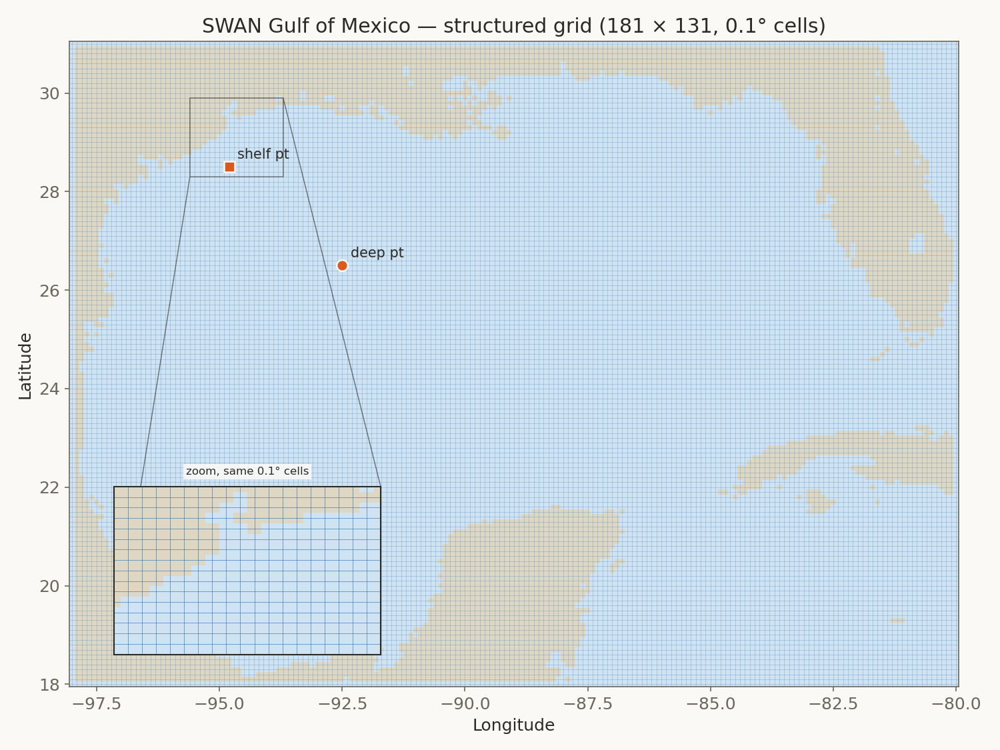

WW3 → SWAN nested wave model · grid intercomparison
Hurricane Harvey (2017)
Structured vs. unstructured regional grid sensitivity for a Gulf-of-Mexico–to–Galveston nested wave forecast — Hs, wave period, and mean direction at four locations spanning deep water to the harbor entrance, over a 72-hour window bracketing landfall.
Key finding
After correcting a depth sign-convention bug in the unstructured WW3 grid setup
(UNST%SF), the structured and unstructured regional grids agree closely across the
full model chain for Harvey: within 3.8% at the deep-water
reference point and 2.5% at the Galveston harbor entrance, for peak
significant wave height. Harvey intensified rapidly just before landfall and came ashore well southwest of Galveston, so the city felt its wind field's northeast quadrant rather than a direct strike.
structured 0.1° grid → boundary spectra
149 nest points → SWAN · Galveston
28,834-node mesh
unstructured 55,691-node mesh → boundary spectra
149 nest points → SWAN · Galveston
28,834-node mesh (same)
Grids & meshes
Both grid types, for both models. WW3's two regional Gulf of Mexico grids (top row) are the actual grids used in this study's WW3 stage. SWAN's unstructured Galveston nest (bottom right) is the actual mesh used in this study's SWAN stage — SWAN's structured Gulf grid (bottom left) is shown for completeness (pywaves supports it) but was not part of the nested pipeline in this study, which always feeds SWAN the unstructured Galveston mesh regardless of WW3's grid type. Markers show the reference points sampled below.




Wind forcing
Both grids share identical forcing: a GAHM-style asymmetric parametric vortex fit to the HURDAT2 best track, blended with ERA5 ambient wind and pressure. Harvey made landfall near Rockport, TX, roughly 280 km southwest of Galveston.
Run design: cold start
Both WW3 and SWAN start from zero wave energy at 08/24 12:00 UTC, and every statistic below covers the full 72-hour window, including the first hours.
Wave parameters by location
Hs, period, and mean wave direction (MWD, 0–360° raw — a jump across the wrap point is not a real direction change) at each of four locations, from deep Gulf water through the SWAN nest boundary to the harbor entrance. Period uses Tp (peak period, from WW3's peak frequency output) for the two Gulf points and T01 (mean period) for the two Galveston points, the field SWAN's own output carried for this run. Hover any chart for hourly values.
Deep water
WW3 · Gulf of Mexico92.5°W, 26.5°N · regional WW3 grid, open water (~2,900 m)
Hs · significant wave height
Tp · wave period
MWD · mean direction
Continental shelf
WW3 · Gulf of Mexico94.5°W, 28.5°N · regional WW3 grid, shelf water (~30-35 m)
Hs · significant wave height
Tp · wave period
MWD · mean direction
Open boundary
SWAN · Galveston94.28°W, 28.51°N · SWAN mesh, nest boundary node (~35 m)
Hs · significant wave height
T01 · wave period
MWD · mean direction
Harbor entrance
SWAN · Galveston94.79°W, 29.285°N · SWAN mesh, nearshore node (~1.8 m)
Hs · significant wave height
T01 · wave period
MWD · mean direction
Peak value summary
| Location | Hs struct. (m) | Hs unstruct. (m) | Difference | Period struct. (s) | Period unstruct. (s) |
|---|---|---|---|---|---|
| Deep water | 3.77 | 3.91 | +3.8% | 11.8 | 11.8 |
| Continental shelf | 4.79 | 4.98 | +3.8% | 13.5 | 12.8 |
| Open boundary | 3.04 | 3.23 | +6.5% | 8.4 | 9.9 |
| Harbor entrance | 0.95 | 0.97 | +2.5% | 7.0 | 8.0 |
UNST%SF fix, the same comparison showed the unstructured grid underestimating the
structured grid by a factor of 5–6×, caused by ~98% of the unstructured mesh's nodes being
silently marked dry.Observed vs. modeled — NDBC buoys
Real wave-height observations from three NDBC buoys spanning the same range as the synthetic reference points above, compared against both grid types at their nearest node. Bias, RMSE, and correlation computed on hourly-matched Hs over the run window; the lower-RMSE grid at each buoy is marked.
Mid Gulf
NDBC 42001 · -89.64°W 25.92°NCompared against the regional WW3 Gulf grid, hourly, nearest valid observation within 30 min.
Hs · wave height
Wind speed
Tp · peak period
MWD · direction
circular; bias/RMSE only
Freeport, TX
NDBC 42019 · -95.34°W 27.91°NCompared against the regional WW3 Gulf grid, hourly, nearest valid observation within 30 min.
Hs · wave height
Wind speed
Tp · peak period
MWD · direction
circular; bias/RMSE only
Galveston, TX
NDBC 42035 · -94.41°W 29.23°NCompared against the SWAN Galveston mesh, hourly, nearest valid observation within 30 min.
Hs · wave height
Wind speed
read from the actual GAHM+ERA5 forcing field, not SWAN's own BLOCK wind output -- that diagnostic was found not to reflect the input forcing at all (verified by injecting an extreme value into the wind file and confirming it never appeared in the output)
RTP · peak period
MWD · direction
circular; bias/RMSE only
Accuracy and runtime, summarized
Raw comparison stats, no verdict — structured and unstructured each win some buoy/parameter comparisons and lose others; see the buoy cards above for the full breakdown per location and parameter.